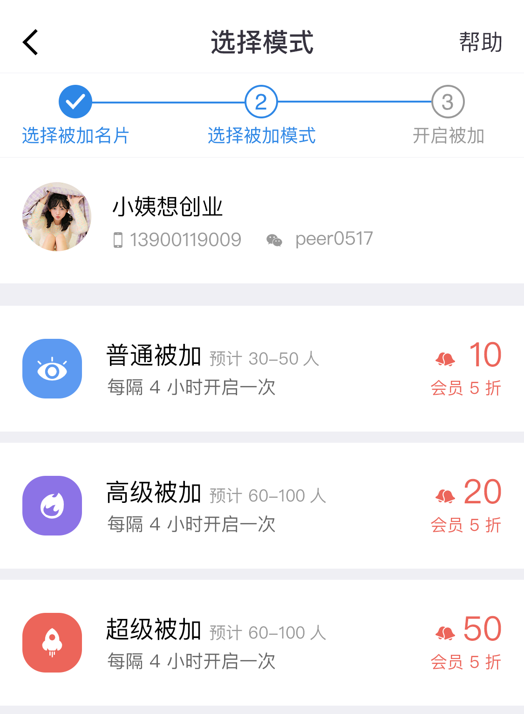

使用说明
1、坐等被加属于高级功能，是目前效果最好最安全的涨人脉方式，使用铃铛进行兑换即可开启。
2、坐等被加为：普通被加、高级被加、超级被加。不同的被加效果及兑换也不一样，处于对您的安全考虑，每种被加的使用均有时间间隔限制，被加每次结束后下次可再次开启。

3、被加说明：坐等被加开启后，为了您的安全考虑，系统会分不同时间段智能进行，所以开启后不要急于一时哦，躺着享受坐等被加吧~
4、小技巧：坚持每天使用微小鹿、提升活跃度、邀请更多好友、加入VIP，都会大大提升您的被加效果哦！
开启被加前请务必参考“开启前的准备工作”的帮助说明。